European News Dashboard
Daily view
Last update: 27 Apr 2026, 20:00 CEST
🇮🇹 Italy — 27 Apr 2026
Updated: 27 Apr 2026, 20:00 CESTWordcloud
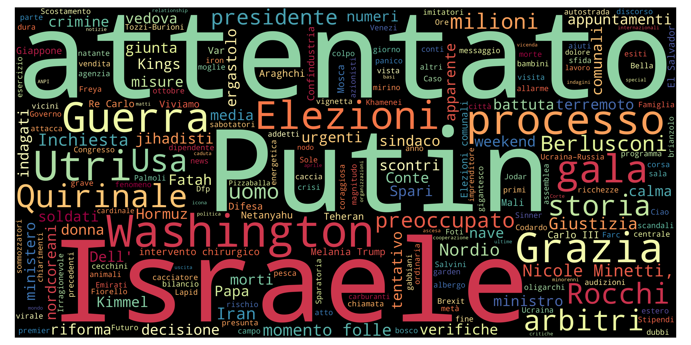
Top 10 unigrams
| Term | Frequency |
|---|---|
| attentato | 6 |
| putin | 5 |
| israele | 5 |
| washington | 5 |
| guerra | 4 |
| grazia | 4 |
| processo | 4 |
| utri | 4 |
| elezione | 4 |
| gala | 4 |
Top 10 phrases
| Term | Frequency |
|---|---|
| nicole minetti | 3 |
| momento folle | 3 |
| intervento chirurgico | 2 |
| re carlo | 2 |
| melania trump | 2 |
| el salvador | 2 |
| elezioni comunali | 2 |
| carlo iii | 2 |
Top 10 new terms (not present on previous day)
| Term | Current day frequency |
|---|---|
| israele | 5 |
| quirinale | 4 |
| processo | 4 |
| utri | 4 |
| grazia | 4 |
| nordio | 3 |
| nicole minetti | 3 |
| arbitro | 3 |
| momento folle | 3 |
| preoccupato | 3 |
Top 10 increasing terms (vs previous day)
| Term | Difference | Current day frequency | Previous day frequency |
|---|---|---|---|
| storia | 2 | 3 | 1 |
| putin | 2 | 5 | 3 |
| gala | 2 | 4 | 2 |
| elezione | 2 | 4 | 2 |
| crimine | 1 | 2 | 1 |
| attentato | 1 | 6 | 5 |
| sindaco | 1 | 2 | 1 |
| riforma | 1 | 2 | 1 |
| tentativo | 1 | 2 | 1 |
Top 10 decreasing terms (vs previous day)
| Term | Difference | Current day frequency | Previous day frequency |
|---|---|---|---|
| spare | -11 | 1 | 12 |
| spari | -9 | 1 | 10 |
| manifesto | -5 | 1 | 6 |
| anno | -5 | 1 | 6 |
| presidente | -4 | 3 | 7 |
| washington | -4 | 5 | 9 |
| attacco | -4 | 1 | 5 |
| negoziato | -3 | 1 | 4 |
| visita | -3 | 1 | 4 |
| guerra | -3 | 4 | 7 |
🇬🇧 UK — 27 Apr 2026
Updated: 27 Apr 2026, 20:00 CESTWordcloud
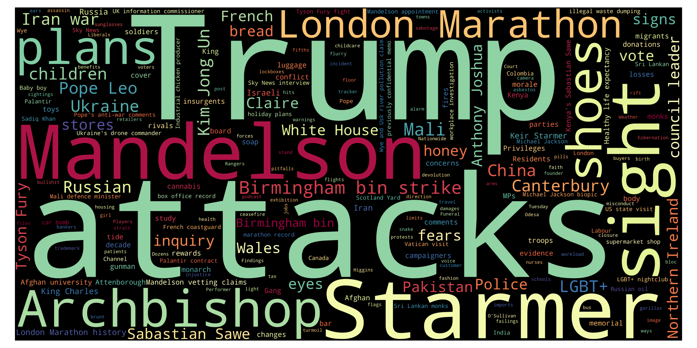
Top 10 unigrams
| Term | Frequency |
|---|---|
| trump | 10 |
| attack | 9 |
| starmer | 9 |
| mandelson | 8 |
| sight | 6 |
| archbishop | 6 |
| shoe | 5 |
| plan | 5 |
| mali | 5 |
| child | 4 |
Top 10 phrases
| Term | Frequency |
|---|---|
| london marathon | 5 |
| birmingham bin strike | 5 |
| iran war | 4 |
| pope leo | 4 |
| sabastian sawe | 3 |
| northern ireland | 3 |
| council leader | 3 |
| white house | 3 |
| anthony joshua | 3 |
| tyson fury | 3 |
Top 10 new terms (not present on previous day)
| Term | Current day frequency |
|---|---|
| starmer | 9 |
| sight | 6 |
| plan | 5 |
| birmingham bin strike | 5 |
| shoe | 5 |
| canterbury | 4 |
| pope leo | 4 |
| russian | 4 |
| ukraine | 4 |
| pakistan | 3 |
Top 10 increasing terms (vs previous day)
| Term | Difference | Current day frequency | Previous day frequency |
|---|---|---|---|
| attack | 7 | 9 | 2 |
| mandelson | 6 | 8 | 2 |
| archbishop | 5 | 6 | 1 |
| mali | 3 | 5 | 2 |
| child | 3 | 4 | 1 |
| london marathon | 2 | 5 | 3 |
| fear | 2 | 3 | 1 |
| china | 2 | 4 | 2 |
| decade | 1 | 2 | 1 |
| party | 1 | 2 | 1 |
Top 10 decreasing terms (vs previous day)
| Term | Difference | Current day frequency | Previous day frequency |
|---|---|---|---|
| iran | -8 | 3 | 11 |
| trump | -6 | 10 | 16 |
| price | -5 | 1 | 6 |
| fire | -4 | 2 | 6 |
| gunman | -3 | 2 | 5 |
| iran war | -3 | 4 | 7 |
| government | -2 | 1 | 3 |
| labour | -2 | 2 | 4 |
| patient | -1 | 1 | 2 |
| correspondent | -1 | 1 | 2 |
🇮🇹 Italy — 26 Apr 2026
Updated: 27 Apr 2026, 20:00 CESTWordcloud
Top 10 unigrams
| Term | Frequency |
|---|---|
| cena | 16 |
| spare | 12 |
| spari | 10 |
| washington | 9 |
| presidente | 7 |
| guerra | 7 |
| corrispondente | 7 |
| manifesto | 6 |
| anno | 6 |
| usa | 6 |
Top 10 phrases
| Term | Frequency |
|---|---|
| casa bianca | 10 |
| minori migranti | 2 |
| cole allen sparato | 2 |
| mezzo governo | 2 |
| presunto attentatore | 2 |
| cole tomas allen | 2 |
| secret service | 2 |
| stati uniti | 2 |
| odio politico | 2 |
Top 10 new terms (not present on previous day)
| Term | Current day frequency |
|---|---|
| cena | 16 |
| spari | 10 |
| casa bianca | 10 |
| washington | 9 |
| presidente | 7 |
| corrispondente | 7 |
| manifesto | 6 |
| attentato | 5 |
| giornalista | 5 |
| negoziato | 4 |
Top 10 increasing terms (vs previous day)
| Term | Difference | Current day frequency | Previous day frequency |
|---|---|---|---|
| spare | 9 | 12 | 3 |
| guerra | 6 | 7 | 1 |
| chernobyl | 4 | 5 | 1 |
| usa | 4 | 6 | 2 |
| attacco | 4 | 5 | 1 |
| visita | 3 | 4 | 1 |
| anno | 3 | 6 | 3 |
| futuro | 1 | 2 | 1 |
| tavolo | 1 | 3 | 2 |
| minaccia | 1 | 2 | 1 |
Top 10 decreasing terms (vs previous day)
| Term | Difference | Current day frequency | Previous day frequency |
|---|---|---|---|
| trump | -3 | 3 | 6 |
| islamabad | -1 | 2 | 3 |
| ferito | -1 | 2 | 3 |
| energia | -1 | 1 | 2 |
| iran | -1 | 5 | 6 |
| crans-montana | -1 | 1 | 2 |
| pace | -1 | 2 | 3 |
| meloni | -1 | 3 | 4 |
🇬🇧 UK — 26 Apr 2026
Updated: 27 Apr 2026, 20:00 CESTWordcloud
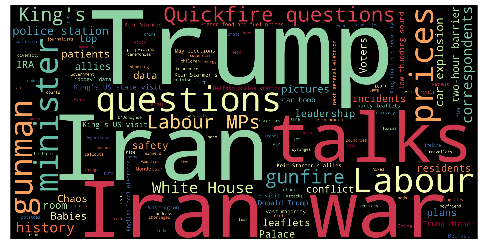
Top 10 unigrams
| Term | Frequency |
|---|---|
| trump | 16 |
| iran | 11 |
| price | 6 |
| fire | 6 |
| question | 6 |
| gunman | 5 |
| gunfire | 4 |
| kings | 4 |
| labour | 4 |
| authority | 3 |
Top 10 phrases
| Term | Frequency |
|---|---|
| iran war | 7 |
| buckingham palace | 5 |
| quickfire questions | 5 |
| labour mps | 4 |
| white house | 4 |
| police station | 3 |
| car explosion | 3 |
| london marathon | 3 |
| king us state visit | 3 |
| keir starmer | 3 |
Top 10 new terms (not present on previous day)
| Term | Current day frequency |
|---|---|
| fire | 6 |
| price | 6 |
| gunman | 5 |
| buckingham palace | 5 |
| quickfire questions | 5 |
| white house | 4 |
| labour mps | 4 |
| kings | 4 |
| police station | 3 |
| car explosion | 3 |
Top 10 increasing terms (vs previous day)
| Term | Difference | Current day frequency | Previous day frequency |
|---|---|---|---|
| trump | 13 | 16 | 3 |
| iran war | 5 | 7 | 2 |
| question | 5 | 6 | 1 |
| labour | 2 | 4 | 2 |
| authority | 2 | 3 | 1 |
| iran | 2 | 11 | 9 |
| gunfire | 2 | 4 | 2 |
| history | 1 | 2 | 1 |
| mystery | 1 | 2 | 1 |
| execution | 1 | 2 | 1 |
Top 10 decreasing terms (vs previous day)
| Term | Difference | Current day frequency | Previous day frequency |
|---|---|---|---|
| child | -13 | 1 | 14 |
| election | -5 | 1 | 6 |
| talk | -4 | 1 | 5 |
| mandelson | -4 | 2 | 6 |
| mali | -2 | 2 | 4 |
| risk | -2 | 1 | 3 |
| girl | -1 | 1 | 2 |
🇮🇹 Italy — 25 Apr 2026
Updated: 27 Apr 2026, 20:00 CESTWordcloud
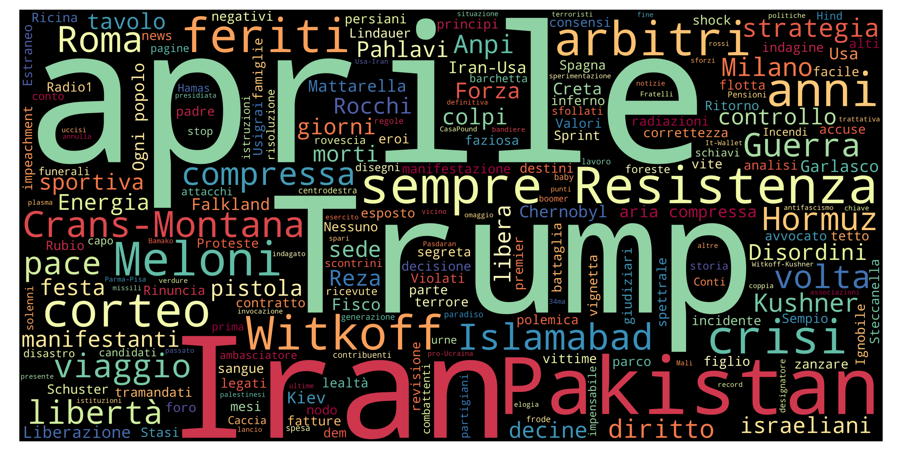
Top 10 unigrams
| Term | Frequency |
|---|---|
| trump | 6 |
| iran | 6 |
| roma | 5 |
| meloni | 4 |
| ferito | 3 |
| anno | 3 |
| pace | 3 |
| rocchi | 3 |
| strategia | 3 |
| spare | 3 |
Top 10 phrases
| Term | Frequency |
|---|---|
| sempre resistenza | 3 |
| serie a | 3 |
| crans montana | 2 |
| 25 aprile | 2 |
| ogni popolo | 2 |
Top 10 new terms (not present on previous day)
| Term | Current day frequency |
|---|---|
| serie a | 3 |
| rocchi | 3 |
| spare | 3 |
| strategia | 3 |
| diritto | 3 |
| pace | 3 |
| sempre resistenza | 3 |
| festa | 3 |
| crisi | 3 |
| milano | 3 |
Top 10 increasing terms (vs previous day)
| Term | Difference | Current day frequency | Previous day frequency |
|---|---|---|---|
| roma | 2 | 5 | 3 |
| voto | 1 | 2 | 1 |
| controllo | 1 | 2 | 1 |
| islamabad | 1 | 3 | 2 |
| anno | 1 | 3 | 2 |
Top 10 decreasing terms (vs previous day)
| Term | Difference | Current day frequency | Previous day frequency |
|---|---|---|---|
| meloni | -13 | 4 | 17 |
| trump | -7 | 6 | 13 |
| usa | -6 | 2 | 8 |
| crans montana | -4 | 2 | 6 |
| spesa | -4 | 1 | 5 |
| guerra | -4 | 1 | 5 |
| iran | -3 | 6 | 9 |
| mattarella | -2 | 2 | 4 |
| libero | -2 | 1 | 3 |
| conto | -1 | 1 | 2 |
🇬🇧 UK — 25 Apr 2026
Updated: 27 Apr 2026, 20:00 CESTWordcloud
Top 10 unigrams
| Term | Frequency |
|---|---|
| child | 14 |
| iran | 9 |
| car | 7 |
| election | 6 |
| london | 6 |
| mandelson | 6 |
| talk | 5 |
| water | 5 |
| difficulty | 5 |
| murder | 5 |
Top 10 phrases
| Term | Frequency |
|---|---|
| wolverhampton house fire | 5 |
| young children | 4 |
| local elections | 3 |
| russia drone attack | 3 |
| typhoon jets | 3 |
| mandelson vetting scandal | 3 |
| iran war | 2 |
| us envoys trip | 2 |
| scotland wales elections | 2 |
| split community | 2 |
Top 10 new terms (not present on previous day)
| Term | Current day frequency |
|---|---|
| car | 7 |
| wolverhampton house fire | 5 |
| wolverhampton | 5 |
| russian | 5 |
| difficulty | 5 |
| jet | 4 |
| raf | 4 |
| evidence | 4 |
| mali | 4 |
| young children | 4 |
Top 10 increasing terms (vs previous day)
| Term | Difference | Current day frequency | Previous day frequency |
|---|---|---|---|
| child | 13 | 14 | 1 |
| election | 5 | 6 | 1 |
| murder | 4 | 5 | 1 |
| water | 4 | 5 | 1 |
| mandelson | 3 | 6 | 3 |
| ukraine | 3 | 5 | 2 |
| nato | 2 | 5 | 3 |
| pakistan | 2 | 4 | 2 |
| london | 2 | 6 | 4 |
| mps | 2 | 3 | 1 |
Top 10 decreasing terms (vs previous day)
| Term | Difference | Current day frequency | Previous day frequency |
|---|---|---|---|
| trump | -12 | 3 | 15 |
| time | -6 | 1 | 7 |
| starmer | -5 | 3 | 8 |
| rape | -5 | 1 | 6 |
| falkland | -3 | 2 | 5 |
| victim | -3 | 1 | 4 |
| question | -2 | 1 | 3 |
| decision | -1 | 1 | 2 |
| met | -1 | 1 | 2 |
| seeker | -1 | 1 | 2 |
🇮🇹 Italy — 24 Apr 2026
Updated: 27 Apr 2026, 20:00 CESTWordcloud
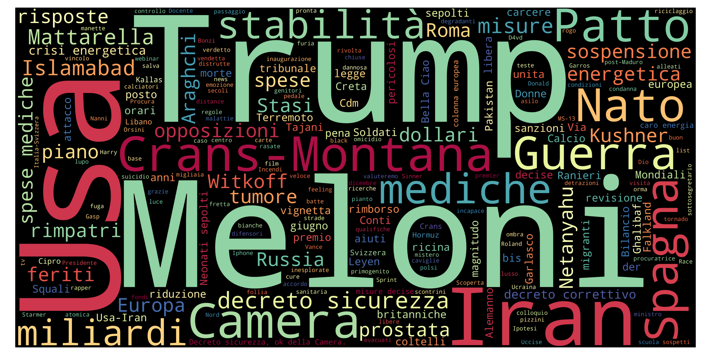
Top 10 unigrams
| Term | Frequency |
|---|---|
| meloni | 17 |
| trump | 13 |
| iran | 9 |
| usa | 8 |
| medico | 7 |
| nato | 7 |
| patto | 6 |
| miliardo | 6 |
| spagna | 6 |
| camera | 6 |
Top 10 phrases
| Term | Frequency |
|---|---|
| crans montana | 6 |
| spese mediche | 5 |
| decreto sicurezza | 5 |
| decreto correttivo | 4 |
| crisi energetica | 3 |
| bella ciao | 2 |
| soldati ucraini | 2 |
| neonati sepolti | 2 |
| ignobile richiesta | 2 |
| decreto sicurezza ok camera | 2 |
Top 10 new terms (not present on previous day)
| Term | Current day frequency |
|---|---|
| trump | 13 |
| nato | 7 |
| spagna | 6 |
| crans montana | 6 |
| patto | 6 |
| spese mediche | 5 |
| stabilità | 5 |
| svizzera | 5 |
| spesa | 5 |
| decreto sicurezza | 5 |
Top 10 increasing terms (vs previous day)
| Term | Difference | Current day frequency | Previous day frequency |
|---|---|---|---|
| meloni | 8 | 17 | 9 |
| medico | 6 | 7 | 1 |
| camera | 4 | 6 | 2 |
| usa | 4 | 8 | 4 |
| miliardo | 3 | 6 | 3 |
| misura | 3 | 4 | 1 |
| mattarella | 2 | 4 | 2 |
| crans-montana | 2 | 3 | 1 |
| morte | 2 | 3 | 1 |
| vignetta | 1 | 2 | 1 |
Top 10 decreasing terms (vs previous day)
| Term | Difference | Current day frequency | Previous day frequency |
|---|---|---|---|
| anno | -5 | 2 | 7 |
| mondiali | -4 | 1 | 5 |
| pronto | -3 | 1 | 4 |
| scostamento | -3 | 1 | 4 |
| iran | -3 | 9 | 12 |
| russia | -3 | 2 | 5 |
| bilancio | -3 | 2 | 5 |
| giuria | -2 | 1 | 3 |
| colloquio | -2 | 1 | 3 |
| energetico | -2 | 3 | 5 |
🇬🇧 UK — 24 Apr 2026
Updated: 27 Apr 2026, 20:00 CESTWordcloud
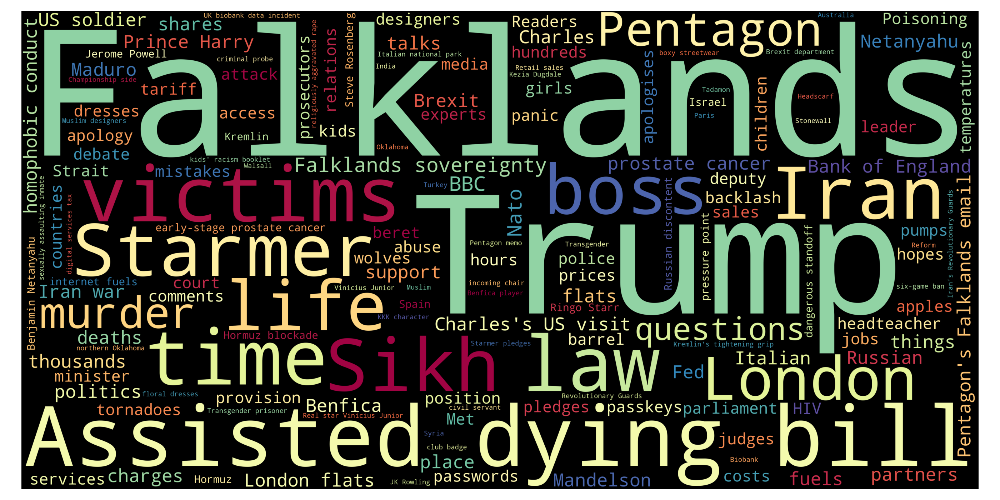
Top 10 unigrams
| Term | Frequency |
|---|---|
| trump | 15 |
| iran | 10 |
| falklands | 9 |
| starmer | 8 |
| time | 7 |
| law | 7 |
| rape | 6 |
| falkland | 5 |
| withdraw | 5 |
| victim | 4 |
Top 10 phrases
| Term | Frequency |
|---|---|
| assisted dying bill | 11 |
| dan walker | 5 |
| falklands sovereignty | 4 |
| zack polanski | 4 |
| teenage girl | 4 |
| ex channel 5 | 3 |
| eu anti fraud office | 3 |
| formal investigation | 3 |
| london flats | 3 |
| bank of england | 3 |
Top 10 new terms (not present on previous day)
| Term | Current day frequency |
|---|---|
| assisted dying bill | 11 |
| falklands | 9 |
| rape | 6 |
| dan walker | 5 |
| withdraw | 5 |
| falkland | 5 |
| kremlin | 4 |
| sikh | 4 |
| pentagon | 4 |
| life | 4 |
Top 10 increasing terms (vs previous day)
| Term | Difference | Current day frequency | Previous day frequency |
|---|---|---|---|
| trump | 6 | 15 | 9 |
| time | 5 | 7 | 2 |
| law | 4 | 7 | 3 |
| starmer | 3 | 8 | 5 |
| talk | 3 | 4 | 1 |
| victim | 3 | 4 | 1 |
| thing | 2 | 3 | 1 |
| place | 2 | 3 | 1 |
| officer | 1 | 2 | 1 |
| reader | 1 | 2 | 1 |
Top 10 decreasing terms (vs previous day)
| Term | Difference | Current day frequency | Previous day frequency |
|---|---|---|---|
| sale | -5 | 1 | 6 |
| mandelson | -5 | 3 | 8 |
| israel | -3 | 2 | 5 |
| bbc | -3 | 4 | 7 |
| hormuz | -3 | 2 | 5 |
| child | -2 | 1 | 3 |
| chief | -2 | 1 | 3 |
| relation | -2 | 2 | 4 |
| thousand | -2 | 1 | 3 |
| help | -2 | 1 | 3 |
🇮🇹 Italy — 23 Apr 2026
Updated: 27 Apr 2026, 20:00 CESTWordcloud
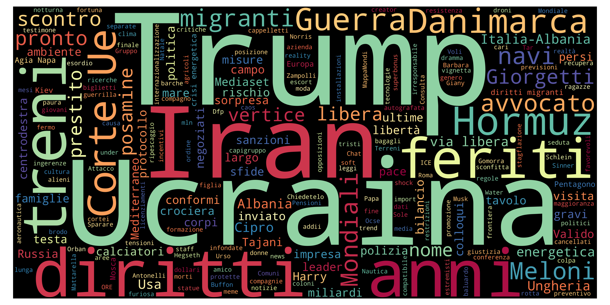
Top 10 unigrams
| Term | Frequency |
|---|---|
| iran | 12 |
| meloni | 9 |
| ucraina | 8 |
| anno | 7 |
| guerra | 6 |
| bilancio | 5 |
| mondiali | 5 |
| ferito | 5 |
| treno | 5 |
| energetico | 5 |
Top 10 phrases
| Term | Frequency |
|---|---|
| corte ue | 4 |
| via libera | 3 |
| crisi energetica | 3 |
| vita internazionale | 2 |
| silvio berlusconi | 2 |
| paolo zampolli controverso inviato trump | 2 |
| biennale di venezia | 2 |
| padiglione russo | 2 |
| colloqui israele libano | 2 |
| stretto di hormuz | 2 |
Top 10 new terms (not present on previous day)
| Term | Current day frequency |
|---|---|
| bilancio | 5 |
| ferito | 5 |
| danimarca | 5 |
| treno | 5 |
| corte ue | 4 |
| scontro | 4 |
| aprile | 4 |
| politica | 4 |
| legge | 4 |
| tar | 3 |
Top 10 increasing terms (vs previous day)
| Term | Difference | Current day frequency | Previous day frequency |
|---|---|---|---|
| anno | 5 | 7 | 2 |
| mondiali | 4 | 5 | 1 |
| energetico | 4 | 5 | 1 |
| ucraina | 3 | 8 | 5 |
| iran | 3 | 12 | 9 |
| scostamento | 3 | 4 | 1 |
| israele | 3 | 4 | 1 |
| papa | 3 | 4 | 1 |
| diritto | 3 | 4 | 1 |
| guerra | 2 | 6 | 4 |
Top 10 decreasing terms (vs previous day)
| Term | Difference | Current day frequency | Previous day frequency |
|---|---|---|---|
| meloni | -4 | 9 | 13 |
| solovyev | -3 | 1 | 4 |
| possibile | -3 | 1 | 4 |
| usa | -2 | 4 | 6 |
| camera | -2 | 2 | 4 |
| morte | -2 | 1 | 3 |
| invio | -2 | 1 | 3 |
| roma | -2 | 3 | 5 |
| euro | -2 | 1 | 3 |
| sanzione | -2 | 2 | 4 |
🇬🇧 UK — 23 Apr 2026
Updated: 27 Apr 2026, 20:00 CESTWordcloud
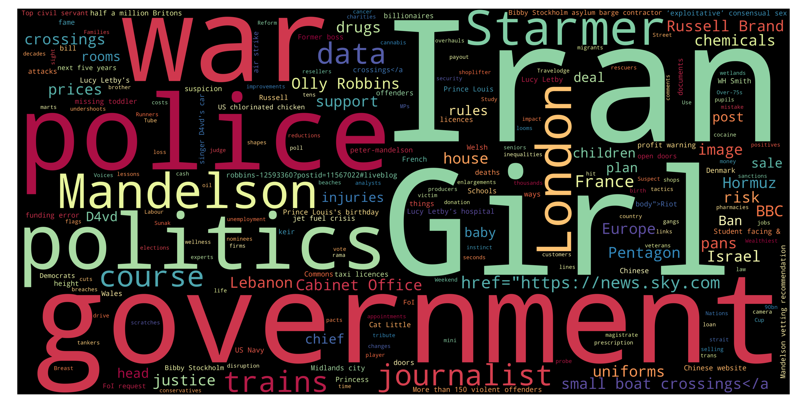
Top 10 unigrams
| Term | Frequency |
|---|---|
| datum | 9 |
| trump | 9 |
| iran | 9 |
| mandelson | 8 |
| government | 7 |
| bbc | 7 |
| sale | 6 |
| epsom | 6 |
| starmer | 5 |
| israel | 5 |
Top 10 phrases
| Term | Frequency |
|---|---|
| chinese website | 4 |
| iran war | 4 |
| king visit | 3 |
| scott mills | 3 |
| radio 2 | 3 |
| brighton beach | 3 |
| prince louis | 3 |
| football focus | 3 |
| half million britons | 3 |
| nhs trust | 3 |
Top 10 new terms (not present on previous day)
| Term | Current day frequency |
|---|---|
| datum | 9 |
| bbc | 7 |
| epsom | 6 |
| sale | 6 |
| israel | 5 |
| chinese | 4 |
| chinese website | 4 |
| relation | 4 |
| nhs | 4 |
| girl | 4 |
Top 10 increasing terms (vs previous day)
| Term | Difference | Current day frequency | Previous day frequency |
|---|---|---|---|
| government | 4 | 7 | 3 |
| journalist | 2 | 3 | 1 |
| thousand | 2 | 3 | 1 |
| hormuz | 2 | 5 | 3 |
| trump | 2 | 9 | 7 |
| prison | 1 | 2 | 1 |
| reform | 1 | 2 | 1 |
| candidate | 1 | 2 | 1 |
| question | 1 | 2 | 1 |
| partner | 1 | 2 | 1 |
Top 10 decreasing terms (vs previous day)
| Term | Difference | Current day frequency | Previous day frequency |
|---|---|---|---|
| iran | -5 | 9 | 14 |
| price | -5 | 2 | 7 |
| starmer | -3 | 5 | 8 |
| d4vd | -3 | 1 | 4 |
| 90bn | -3 | 1 | 4 |
| death | -2 | 2 | 4 |
| record | -2 | 1 | 3 |
| concern | -2 | 1 | 3 |
| talk | -2 | 1 | 3 |
| olly robbins | -2 | 2 | 4 |
🇮🇹 Italy — 22 Apr 2026
Updated: 27 Apr 2026, 20:00 CESTWordcloud
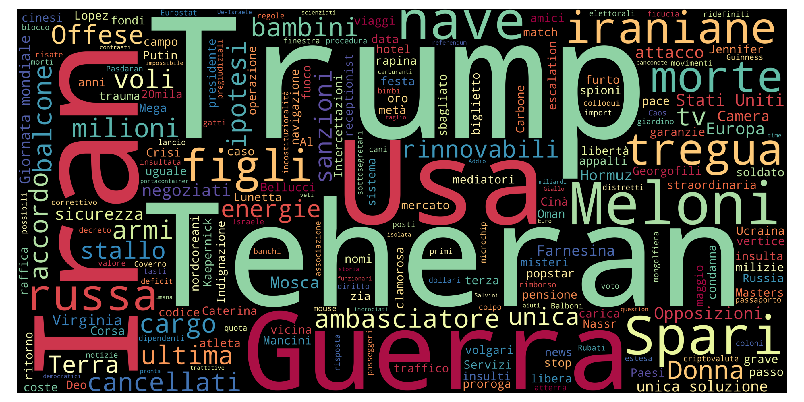
Top 10 unigrams
| Term | Frequency |
|---|---|
| meloni | 13 |
| trump | 12 |
| iran | 9 |
| usa | 6 |
| tregua | 5 |
| fiducia | 5 |
| ucraina | 5 |
| roma | 5 |
| guerra | 4 |
| libero | 4 |
Top 10 phrases
| Term | Frequency |
|---|---|
| via libera | 2 |
| casa bianca | 2 |
| polemista russo | 2 |
| iran usa | 2 |
Top 10 new terms (not present on previous day)
| Term | Current day frequency |
|---|---|
| roma | 5 |
| possibile | 4 |
| miliardo | 4 |
| sanzione | 4 |
| euro | 3 |
| invio | 3 |
| prestito | 3 |
| sicurezza | 3 |
| dollaro | 3 |
| nave | 3 |
Top 10 increasing terms (vs previous day)
| Term | Difference | Current day frequency | Previous day frequency |
|---|---|---|---|
| ucraina | 4 | 5 | 1 |
| fiducia | 4 | 5 | 1 |
| solovyev | 3 | 4 | 1 |
| usa | 3 | 6 | 3 |
| libero | 3 | 4 | 1 |
| ambasciatore | 3 | 4 | 1 |
| televisione | 2 | 3 | 1 |
| russia | 2 | 3 | 1 |
| camera | 2 | 4 | 2 |
| morte | 2 | 3 | 1 |
Top 10 decreasing terms (vs previous day)
| Term | Difference | Current day frequency | Previous day frequency |
|---|---|---|---|
| trump | -6 | 12 | 18 |
| insulto | -5 | 2 | 7 |
| mattarella | -3 | 1 | 4 |
| iran | -3 | 9 | 12 |
| premier | -2 | 1 | 3 |
| vertice | -2 | 1 | 3 |
| opposizione | -2 | 1 | 3 |
| calciatore | -2 | 1 | 3 |
| governo | -2 | 2 | 4 |
| escort | -2 | 1 | 3 |
🇬🇧 UK — 22 Apr 2026
Updated: 27 Apr 2026, 20:00 CESTWordcloud
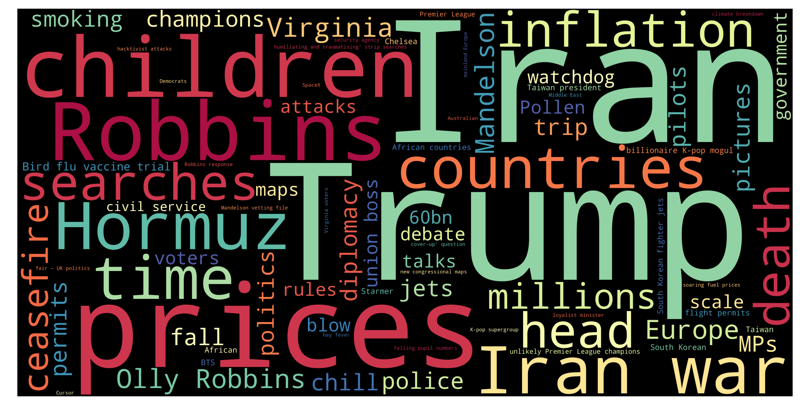
Top 10 unigrams
| Term | Frequency |
|---|---|
| iran | 14 |
| mandelson | 8 |
| starmer | 8 |
| price | 7 |
| trump | 7 |
| jewish | 7 |
| inquest | 6 |
| ghana | 6 |
| london | 5 |
| europe | 5 |
Top 10 phrases
| Term | Frequency |
|---|---|
| iran war | 4 |
| fuel prices | 4 |
| ghana crash | 4 |
| olly robbins | 4 |
| mandelson vetting | 3 |
| liam rosenior | 3 |
| keir starmer | 3 |
| equatorial guinea | 3 |
| romance frauds | 3 |
| bristol school | 3 |
Top 10 new terms (not present on previous day)
| Term | Current day frequency |
|---|---|
| ghana | 6 |
| inquest | 6 |
| europe | 5 |
| france | 4 |
| ukraine | 4 |
| ghana crash | 4 |
| fuel prices | 4 |
| iran war | 4 |
| widow | 4 |
| loan | 4 |
Top 10 increasing terms (vs previous day)
| Term | Difference | Current day frequency | Previous day frequency |
|---|---|---|---|
| jewish | 5 | 7 | 2 |
| price | 4 | 7 | 3 |
| iran | 4 | 14 | 10 |
| 90bn | 3 | 4 | 1 |
| d4vd | 3 | 4 | 1 |
| crossing | 2 | 3 | 1 |
| boat | 1 | 2 | 1 |
| flight | 1 | 2 | 1 |
| concern | 1 | 3 | 2 |
| charge | 1 | 2 | 1 |
Top 10 decreasing terms (vs previous day)
| Term | Difference | Current day frequency | Previous day frequency |
|---|---|---|---|
| mandelson | -13 | 8 | 21 |
| starmer | -4 | 8 | 12 |
| reform | -3 | 1 | 4 |
| olly robbins | -3 | 4 | 7 |
| china | -2 | 2 | 4 |
| evidence | -2 | 2 | 4 |
| assault | -1 | 1 | 2 |
| question | -1 | 1 | 2 |
| death | -1 | 4 | 5 |
| hundred | -1 | 1 | 2 |
🇮🇹 Italy — 21 Apr 2026
Updated: 27 Apr 2026, 20:00 CESTWordcloud
Top 10 unigrams
| Term | Frequency |
|---|---|
| trump | 18 |
| meloni | 13 |
| iran | 12 |
| insulto | 7 |
| guerra | 5 |
| tregua | 5 |
| russo | 5 |
| anno | 4 |
| mattarella | 4 |
| governo | 4 |
Top 10 phrases
| Term | Frequency |
|---|---|
| regno unito | 3 |
| crans montana | 3 |
| dl sicurezza | 2 |
| crisi mondiali | 2 |
| papa leone | 2 |
| nessun pasticcio | 2 |
| decreto sicurezza | 2 |
| guinea equatoriale | 2 |
| stretto di hormuz | 2 |
Top 10 new terms (not present on previous day)
| Term | Current day frequency |
|---|---|
| insulto | 7 |
| russo | 5 |
| tregua | 5 |
| usa-iran | 4 |
| ruto | 4 |
| segretaria | 3 |
| misura | 3 |
| africa | 3 |
| regno unito | 3 |
| sfida | 3 |
Top 10 increasing terms (vs previous day)
| Term | Difference | Current day frequency | Previous day frequency |
|---|---|---|---|
| trump | 15 | 18 | 3 |
| meloni | 11 | 13 | 2 |
| iran | 7 | 12 | 5 |
| mattarella | 3 | 4 | 1 |
| premier | 2 | 3 | 1 |
| kenya | 2 | 4 | 2 |
| calciatore | 2 | 3 | 1 |
| banco | 2 | 3 | 1 |
| crans-montana | 2 | 3 | 1 |
| vertice | 2 | 3 | 1 |
Top 10 decreasing terms (vs previous day)
| Term | Difference | Current day frequency | Previous day frequency |
|---|---|---|---|
| rimpatro | -3 | 2 | 5 |
| accordo | -3 | 1 | 4 |
| presidente | -2 | 1 | 3 |
| usa | -2 | 3 | 5 |
| statua | -2 | 1 | 3 |
| bambino | -2 | 1 | 3 |
| milione | -2 | 2 | 4 |
| cliente | -1 | 1 | 2 |
| piramide | -1 | 1 | 2 |
| stop | -1 | 1 | 2 |
🇬🇧 UK — 21 Apr 2026
Updated: 27 Apr 2026, 20:00 CESTWordcloud
Top 10 unigrams
| Term | Frequency |
|---|---|
| mandelson | 21 |
| starmer | 12 |
| iran | 10 |
| trump | 8 |
| london | 6 |
| death | 5 |
| israel | 5 |
| evidence | 4 |
| soldier | 4 |
| telegram | 4 |
Top 10 phrases
| Term | Frequency |
|---|---|
| olly robbins | 7 |
| foreign office | 4 |
| jesus statue | 4 |
| mass trial | 4 |
| smoking ban | 3 |
| facial recognition | 3 |
| mandelson vetting row | 3 |
| unemployment rate | 3 |
| israeli soldiers | 3 |
| attempted murder | 3 |
Top 10 new terms (not present on previous day)
| Term | Current day frequency |
|---|---|
| olly robbins | 7 |
| israel | 5 |
| telegram | 4 |
| china | 4 |
| arson | 4 |
| foreign office | 4 |
| mass trial | 4 |
| ofcom | 4 |
| mexico | 3 |
| mandelson vetting row | 3 |
Top 10 increasing terms (vs previous day)
| Term | Difference | Current day frequency | Previous day frequency |
|---|---|---|---|
| evidence | 3 | 4 | 1 |
| reform | 3 | 4 | 1 |
| trump | 3 | 8 | 5 |
| death | 3 | 5 | 2 |
| israeli | 2 | 4 | 2 |
| risk | 2 | 3 | 1 |
| rule | 2 | 3 | 1 |
| arrest | 1 | 2 | 1 |
| politic | 1 | 2 | 1 |
| medium | 1 | 2 | 1 |
Top 10 decreasing terms (vs previous day)
| Term | Difference | Current day frequency | Previous day frequency |
|---|---|---|---|
| car | -7 | 1 | 8 |
| mandelson | -7 | 21 | 28 |
| pedestrian | -6 | 1 | 7 |
| school | -5 | 3 | 8 |
| life | -4 | 1 | 5 |
| phone | -4 | 2 | 6 |
| iran | -4 | 10 | 14 |
| plan | -2 | 2 | 4 |
| starmer | -2 | 12 | 14 |
| d4vd | -2 | 1 | 3 |
🇮🇹 Italy — 20 Apr 2026
Updated: 27 Apr 2026, 20:00 CESTWordcloud
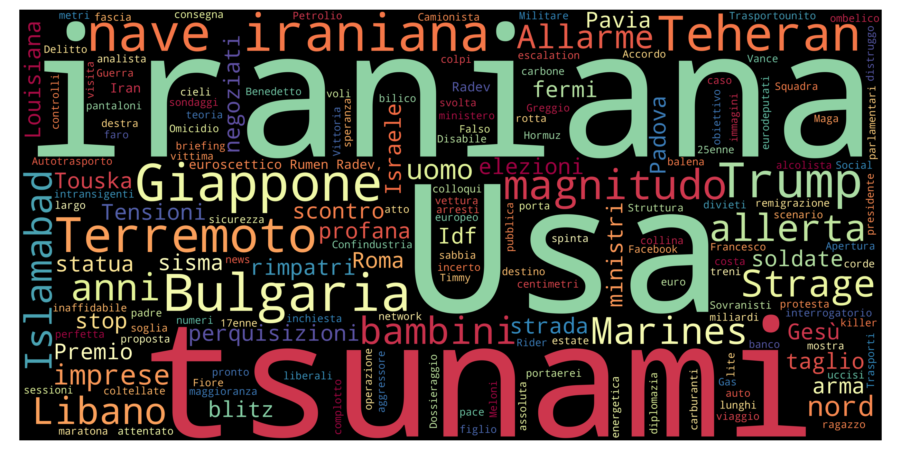
Top 10 unigrams
| Term | Frequency |
|---|---|
| giappone | 7 |
| bulgaria | 6 |
| rimpatro | 5 |
| terremoto | 5 |
| allerto | 5 |
| usa | 5 |
| iran | 5 |
| accordo | 4 |
| guerra | 4 |
| caso | 4 |
Top 10 phrases
| Term | Frequency |
|---|---|
| shock energetico | 4 |
| nave iraniana | 4 |
| stretto di hormuz | 2 |
| euroscettico rumen radev | 2 |
| possibile mega | 2 |
| dl sicurezza | 2 |
Top 10 new terms (not present on previous day)
| Term | Current day frequency |
|---|---|
| giappone | 7 |
| rimpatro | 5 |
| terremoto | 5 |
| allerto | 5 |
| shock energetico | 4 |
| caso | 4 |
| nave iraniana | 4 |
| bce | 3 |
| statua | 3 |
| fattura | 3 |
Top 10 increasing terms (vs previous day)
| Term | Difference | Current day frequency | Previous day frequency |
|---|---|---|---|
| milione | 3 | 4 | 1 |
| iraniano | 3 | 4 | 1 |
| accordo | 2 | 4 | 2 |
| anno | 2 | 4 | 2 |
| strage | 2 | 3 | 1 |
| presidente | 1 | 3 | 2 |
| parlamento | 1 | 2 | 1 |
| elezione | 1 | 2 | 1 |
| usa | 1 | 5 | 4 |
| trump | 1 | 3 | 2 |
Top 10 decreasing terms (vs previous day)
| Term | Difference | Current day frequency | Previous day frequency |
|---|---|---|---|
| iran | -4 | 5 | 9 |
| ferito | -3 | 1 | 4 |
| bulgaria | -3 | 6 | 9 |
| bambino | -3 | 3 | 6 |
| locale | -3 | 1 | 4 |
| sparatoria | -2 | 1 | 3 |
| petrolio | -2 | 1 | 3 |
| rissa | -2 | 1 | 3 |
| papa | -1 | 2 | 3 |
| morto | -1 | 2 | 3 |
🇬🇧 UK — 20 Apr 2026
Updated: 27 Apr 2026, 20:00 CESTWordcloud
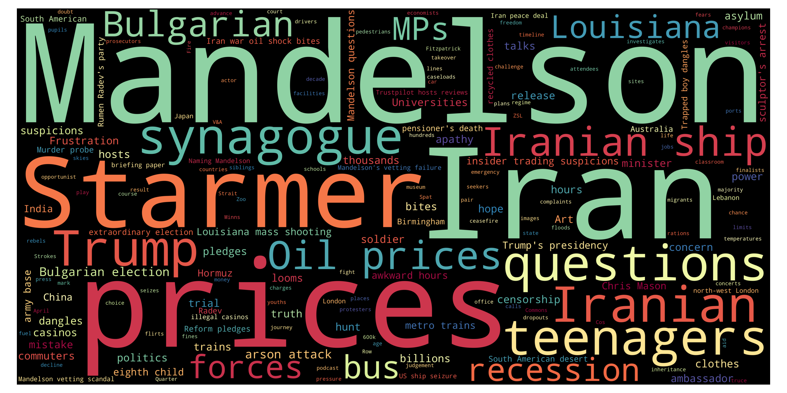
Top 10 unigrams
| Term | Frequency |
|---|---|
| mandelson | 28 |
| starmer | 14 |
| iran | 14 |
| school | 8 |
| car | 8 |
| iranian | 8 |
| pedestrian | 7 |
| london | 7 |
| phone | 6 |
| price | 5 |
Top 10 phrases
| Term | Frequency |
|---|---|
| iranian ship | 6 |
| anti islam | 5 |
| attempted murder | 5 |
| anti islam influencer | 4 |
| mobile phones | 4 |
| tim cook | 3 |
| elon musk | 3 |
| iran war | 3 |
| jesus statue | 3 |
| mandelson vetting scandal | 3 |
Top 10 new terms (not present on previous day)
| Term | Current day frequency |
|---|---|
| car | 8 |
| school | 8 |
| iranian ship | 6 |
| phone | 6 |
| attack | 5 |
| attempted murder | 5 |
| anti islam | 5 |
| court | 5 |
| truth | 4 |
| mobile phones | 4 |
Top 10 increasing terms (vs previous day)
| Term | Difference | Current day frequency | Previous day frequency |
|---|---|---|---|
| mandelson | 16 | 28 | 12 |
| starmer | 6 | 14 | 8 |
| life | 4 | 5 | 1 |
| price | 4 | 5 | 1 |
| iran | 3 | 14 | 11 |
| author | 2 | 3 | 1 |
| pedestrian | 2 | 7 | 5 |
| iranian | 1 | 8 | 7 |
| driver | 1 | 2 | 1 |
| plan | 1 | 4 | 3 |
Top 10 decreasing terms (vs previous day)
| Term | Difference | Current day frequency | Previous day frequency |
|---|---|---|---|
| child | -4 | 3 | 7 |
| london | -3 | 7 | 10 |
| judgment | -3 | 1 | 4 |
| talk | -2 | 3 | 5 |
| reform | -2 | 1 | 3 |
| control | -1 | 1 | 2 |
| officer | -1 | 1 | 2 |
| charge | -1 | 1 | 2 |
| scientist | -1 | 1 | 2 |
| water | -1 | 1 | 2 |
🇮🇹 Italy — 19 Apr 2026
Updated: 27 Apr 2026, 20:00 CESTWordcloud
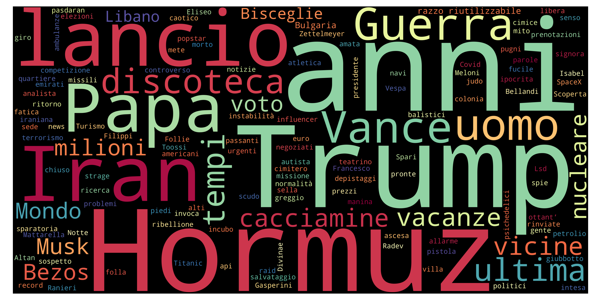
Top 10 unigrams
| Term | Frequency |
|---|---|
| bulgaria | 9 |
| iran | 9 |
| bambino | 6 |
| guerra | 5 |
| vance | 4 |
| locale | 4 |
| ferito | 4 |
| voto | 4 |
| lancio | 4 |
| usa | 4 |
Top 10 phrases
| Term | Frequency |
|---|---|
| diversi feriti | 2 |
| iowa city | 2 |
| razzo riutilizzabile | 2 |
| otto bambini morti | 2 |
| missili balistici | 2 |
| corea del nord | 2 |
| serie a | 2 |
Top 10 new terms (not present on previous day)
| Term | Current day frequency |
|---|---|
| bulgaria | 9 |
| bambino | 6 |
| lancio | 4 |
| ferito | 4 |
| voto | 4 |
| locale | 4 |
| vance | 4 |
| rissa | 3 |
| sparatoria | 3 |
| radev | 3 |
Top 10 increasing terms (vs previous day)
| Term | Difference | Current day frequency | Previous day frequency |
|---|---|---|---|
| presidente | 1 | 2 | 1 |
| pronto | 1 | 2 | 1 |
| negoziato | 1 | 2 | 1 |
| blocco | 1 | 2 | 1 |
| politico | 1 | 2 | 1 |
| guerra | 1 | 5 | 4 |
| accordo | 1 | 2 | 1 |
| tempo | 1 | 2 | 1 |
Top 10 decreasing terms (vs previous day)
| Term | Difference | Current day frequency | Previous day frequency |
|---|---|---|---|
| trump | -15 | 2 | 17 |
| hormuz | -7 | 1 | 8 |
| pace | -4 | 2 | 6 |
| russia | -4 | 1 | 5 |
| spare | -3 | 1 | 4 |
| anno | -2 | 2 | 4 |
| uomo | -2 | 2 | 4 |
| usa | -2 | 4 | 6 |
| sanzione | -2 | 1 | 3 |
| meloni | -2 | 2 | 4 |
🇬🇧 UK — 19 Apr 2026
Updated: 27 Apr 2026, 20:00 CESTWordcloud
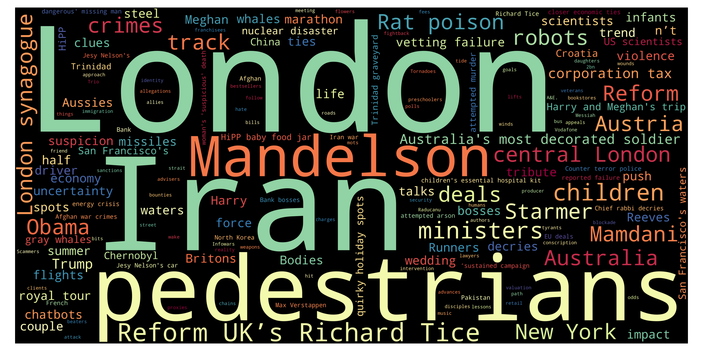
Top 10 unigrams
| Term | Frequency |
|---|---|
| mandelson | 12 |
| iran | 11 |
| london | 10 |
| starmer | 8 |
| child | 7 |
| iranian | 7 |
| minister | 6 |
| pedestrian | 5 |
| talk | 5 |
| austria | 5 |
Top 10 phrases
| Term | Frequency |
|---|---|
| rat poison | 5 |
| eight children | 4 |
| central london | 4 |
| reform richard tice | 4 |
| london synagogue | 3 |
| louisiana shooting | 2 |
| senior iranian politician | 2 |
| strait of | 2 |
| vetting failure | 2 |
| jesy nelson | 2 |
Top 10 new terms (not present on previous day)
| Term | Current day frequency |
|---|---|
| iranian | 7 |
| talk | 5 |
| austria | 5 |
| rat poison | 5 |
| eight children | 4 |
| reform richard tice | 4 |
| louisiana | 4 |
| central london | 4 |
| judgment | 4 |
| tehran | 3 |
Top 10 increasing terms (vs previous day)
| Term | Difference | Current day frequency | Previous day frequency |
|---|---|---|---|
| starmer | 5 | 8 | 3 |
| london | 5 | 10 | 5 |
| minister | 5 | 6 | 1 |
| child | 4 | 7 | 3 |
| pedestrian | 4 | 5 | 1 |
| summer | 2 | 3 | 1 |
| flight | 1 | 2 | 1 |
| half | 1 | 2 | 1 |
| blockade | 1 | 2 | 1 |
| iran | 1 | 11 | 10 |
Top 10 decreasing terms (vs previous day)
| Term | Difference | Current day frequency | Previous day frequency |
|---|---|---|---|
| trump | -4 | 4 | 8 |
| driver | -3 | 1 | 4 |
| hormuz | -3 | 3 | 6 |
| medium | -2 | 1 | 3 |
| bus | -2 | 1 | 3 |
| french | -2 | 2 | 4 |
| mandelson | -2 | 12 | 14 |
| counter terror police | -1 | 2 | 3 |
| n’t | -1 | 1 | 2 |
| lammy | -1 | 2 | 3 |
🇮🇹 Italy — 18 Apr 2026
Updated: 27 Apr 2026, 20:00 CESTWordcloud

Top 10 unigrams
| Term | Frequency |
|---|---|
| trump | 17 |
| iran | 9 |
| hormuz | 8 |
| libano | 7 |
| pace | 6 |
| usa | 6 |
| papa | 5 |
| russia | 5 |
| guerra | 4 |
| francese | 4 |
Top 10 phrases
| Term | Frequency |
|---|---|
| aereo diretto | 3 |
| new york | 3 |
| casco blu | 2 |
| kash patel | 2 |
| stretto hormuz | 2 |
Top 10 new terms (not present on previous day)
| Term | Current day frequency |
|---|---|
| papa | 5 |
| francese | 4 |
| spare | 4 |
| hezbollah | 4 |
| milano | 4 |
| teheran | 3 |
| aereo diretto | 3 |
| kiev | 3 |
| pittsburgh | 3 |
| new york | 3 |
Top 10 increasing terms (vs previous day)
| Term | Difference | Current day frequency | Previous day frequency |
|---|---|---|---|
| hormuz | 5 | 8 | 3 |
| trump | 4 | 17 | 13 |
| pace | 3 | 6 | 3 |
| uomo | 3 | 4 | 1 |
| russia | 2 | 5 | 3 |
| petrolio | 2 | 3 | 1 |
| uranio | 2 | 3 | 1 |
| sanzione | 2 | 3 | 1 |
| crisi | 1 | 2 | 1 |
| schlein | 1 | 2 | 1 |
Top 10 decreasing terms (vs previous day)
| Term | Difference | Current day frequency | Previous day frequency |
|---|---|---|---|
| iran | -7 | 9 | 16 |
| meloni | -7 | 4 | 11 |
| mondo | -5 | 1 | 6 |
| blocco | -4 | 1 | 5 |
| tregua | -4 | 1 | 5 |
| pronto | -3 | 1 | 4 |
| nave | -3 | 3 | 6 |
| transizione | -2 | 1 | 3 |
| parte | -2 | 1 | 3 |
| fmi | -2 | 1 | 3 |
🇬🇧 UK — 18 Apr 2026
Updated: 27 Apr 2026, 20:00 CESTWordcloud

Top 10 unigrams
| Term | Frequency |
|---|---|
| mandelson | 14 |
| iran | 10 |
| trump | 8 |
| strait | 6 |
| hormuz | 6 |
| item | 5 |
| car | 5 |
| london | 5 |
| driver | 4 |
| french | 4 |
Top 10 phrases
| Term | Frequency |
|---|---|
| iran war | 3 |
| counter terror police | 3 |
| israeli embassy | 3 |
| white house | 3 |
| plea deal | 3 |
| canadian online poison seller | 3 |
| murder charges | 3 |
| arson attack | 3 |
| mandelson security row | 2 |
| mandelson mess | 2 |
Top 10 new terms (not present on previous day)
| Term | Current day frequency |
|---|---|
| item | 5 |
| french | 4 |
| fire | 3 |
| counter terror police | 3 |
| hungary | 3 |
| canadian | 3 |
| arson attack | 3 |
| post | 3 |
| murder charges | 3 |
| canadian online poison seller | 3 |
Top 10 increasing terms (vs previous day)
| Term | Difference | Current day frequency | Previous day frequency |
|---|---|---|---|
| strait | 4 | 6 | 2 |
| car | 4 | 5 | 1 |
| trump | 3 | 8 | 5 |
| driver | 3 | 4 | 1 |
| charge | 2 | 3 | 1 |
| child | 2 | 3 | 1 |
| bus | 2 | 3 | 1 |
| access | 1 | 2 | 1 |
| candidate | 1 | 2 | 1 |
| treatment | 1 | 2 | 1 |
Top 10 decreasing terms (vs previous day)
| Term | Difference | Current day frequency | Previous day frequency |
|---|---|---|---|
| starmer | -8 | 3 | 11 |
| price | -7 | 1 | 8 |
| mandelson | -7 | 14 | 21 |
| question | -5 | 1 | 6 |
| iran | -5 | 10 | 15 |
| lebanon | -2 | 2 | 4 |
| ambulance | -2 | 1 | 3 |
| half | -2 | 1 | 3 |
| summer | -2 | 1 | 3 |
| minister | -1 | 1 | 2 |
🇮🇹 Italy — 17 Apr 2026
Updated: 27 Apr 2026, 20:00 CESTWordcloud

Top 10 unigrams
| Term | Frequency |
|---|---|
| iran | 16 |
| trump | 13 |
| meloni | 11 |
| europa | 8 |
| nave | 6 |
| mondo | 6 |
| libano | 6 |
| usa | 6 |
| blocco | 5 |
| giorno | 5 |
Top 10 phrases
| Term | Frequency |
|---|---|
| papa leone | 4 |
| campo largo | 2 |
| pulp fiction | 2 |
| strappo usa | 2 |
| foreign office | 2 |
| carburante aerei | 2 |
| via libera | 2 |
| stretto di hormuz | 2 |
| supporto esterno | 2 |
Top 10 new terms (not present on previous day)
| Term | Current day frequency |
|---|---|
| iran | 16 |
| trump | 13 |
| meloni | 11 |
| europa | 8 |
| libano | 6 |
| mondo | 6 |
| usa | 6 |
| nave | 6 |
| parigi | 5 |
| giorno | 5 |
Top 10 increasing terms (vs previous day)
| Term | Difference | Current day frequency | Previous day frequency |
|---|---|---|---|
| accordo | 1 | 2 | 1 |
| missione | 1 | 2 | 1 |
Top 10 decreasing terms (vs previous day)
No significantly decreasing terms.
🇬🇧 UK — 17 Apr 2026
Updated: 27 Apr 2026, 20:00 CESTWordcloud

Top 10 unigrams
| Term | Frequency |
|---|---|
| mandelson | 21 |
| iran | 15 |
| starmer | 11 |
| price | 8 |
| question | 6 |
| evidence | 6 |
| epsom | 6 |
| hormuz | 6 |
| death | 5 |
| trump | 5 |
Top 10 phrases
| Term | Frequency |
|---|---|
| olly robbins | 7 |
| daniel kinahan | 6 |
| iran war | 4 |
| new york | 3 |
| oil prices | 3 |
| mandelson vetting | 3 |
| international organised crime | 3 |
| cup stadium | 3 |
| hugely inflated prices | 3 |
| peter mandelson | 3 |
Top 10 new terms (not present on previous day)
| Term | Current day frequency |
|---|---|
| olly robbins | 7 |
| evidence | 6 |
| epsom | 6 |
| daniel kinahan | 6 |
| protest | 4 |
| police | 4 |
| oil prices | 3 |
| international organised crime | 3 |
| mandelson vetting row | 3 |
| officer | 3 |
Top 10 increasing terms (vs previous day)
| Term | Difference | Current day frequency | Previous day frequency |
|---|---|---|---|
| mandelson | 14 | 21 | 7 |
| question | 5 | 6 | 1 |
| starmer | 5 | 11 | 6 |
| death | 4 | 5 | 1 |
| bill | 3 | 4 | 1 |
| thousand | 3 | 4 | 1 |
| hormuz | 3 | 6 | 3 |
| jewish | 2 | 4 | 2 |
| summer | 2 | 3 | 1 |
| link | 2 | 3 | 1 |
Top 10 decreasing terms (vs previous day)
| Term | Difference | Current day frequency | Previous day frequency |
|---|---|---|---|
| trump | -8 | 5 | 13 |
| iran war | -6 | 4 | 10 |
| car | -4 | 1 | 5 |
| boss | -3 | 2 | 5 |
| price | -3 | 8 | 11 |
| bbc | -3 | 3 | 6 |
| child | -2 | 1 | 3 |
| cost | -2 | 1 | 3 |
| shortage | -2 | 1 | 3 |
| london | -2 | 5 | 7 |
🇮🇹 Italy — 16 Apr 2026
Updated: 27 Apr 2026, 20:00 CESTWordcloud

Top 10 unigrams
| Term | Frequency |
|---|---|
| colloquio | 1 |
| occhio | 1 |
| usa-iran | 1 |
| truppa | 1 |
| round | 1 |
| principio | 1 |
| accordo | 1 |
| portaerei | 1 |
| lungo | 1 |
| missione | 1 |
Top 10 phrases
No phrases found for this day.
Top 10 new terms (not present on previous day)
| Term | Current day frequency |
|---|---|
| round | 1 |
| occhio | 1 |
| portaerei | 1 |
| missione | 1 |
| lungo | 1 |
| truppa | 1 |
| usa-iran | 1 |
| principio | 1 |
Top 10 increasing terms (vs previous day)
No significantly increasing terms.
Top 10 decreasing terms (vs previous day)
| Term | Difference | Current day frequency | Previous day frequency |
|---|---|---|---|
| colloquio | -2 | 1 | 3 |
🇬🇧 UK — 16 Apr 2026
Updated: 27 Apr 2026, 20:00 CESTWordcloud

Top 10 unigrams
| Term | Frequency |
|---|---|
| iran | 16 |
| trump | 13 |
| price | 11 |
| mandelson | 7 |
| london | 7 |
| government | 6 |
| train | 6 |
| bbc | 6 |
| pope | 6 |
| starmer | 6 |
Top 10 phrases
| Term | Frequency |
|---|---|
| iran war | 10 |
| alex manninger | 4 |
| former arsenal goalkeeper alex manninger | 4 |
| food shortages | 3 |
| university lecturer | 3 |
| south african | 3 |
| rfk jr | 3 |
| foreign office | 2 |
| home office | 2 |
| extraordinary feat | 2 |
Top 10 new terms (not present on previous day)
| Term | Current day frequency |
|---|---|
| mandelson | 7 |
| government | 6 |
| train | 6 |
| car | 5 |
| conviction | 4 |
| tyrant | 4 |
| alex manninger | 4 |
| murder | 4 |
| vaccine | 4 |
| migrant | 4 |
Top 10 increasing terms (vs previous day)
| Term | Difference | Current day frequency | Previous day frequency |
|---|---|---|---|
| price | 9 | 11 | 2 |
| pope | 4 | 6 | 2 |
| starmer | 3 | 6 | 3 |
| boss | 2 | 5 | 3 |
| shortage | 2 | 3 | 1 |
| reform | 2 | 3 | 1 |
| minister | 2 | 3 | 1 |
| israel | 2 | 4 | 2 |
| gap | 1 | 2 | 1 |
| change | 1 | 2 | 1 |
Top 10 decreasing terms (vs previous day)
| Term | Difference | Current day frequency | Previous day frequency |
|---|---|---|---|
| iran | -12 | 16 | 28 |
| labour | -5 | 2 | 7 |
| israeli | -5 | 2 | 7 |
| talk | -4 | 1 | 5 |
| job | -3 | 3 | 6 |
| fear | -3 | 1 | 4 |
| iran war | -3 | 10 | 13 |
| bbc | -3 | 6 | 9 |
| leader | -3 | 1 | 4 |
| time | -3 | 3 | 6 |
🇮🇹 Italy — 15 Apr 2026
Updated: 27 Apr 2026, 20:00 CESTWordcloud

Top 10 unigrams
| Term | Frequency |
|---|---|
| meloni | 25 |
| iran | 12 |
| usa | 9 |
| zelensky | 7 |
| mattarella | 7 |
| guerra | 7 |
| scuola | 7 |
| morto | 6 |
| turchia | 6 |
| kiev | 5 |
Top 10 phrases
| Term | Frequency |
|---|---|
| stesso rapporto | 7 |
| papa leone | 3 |
| casa bianca | 3 |
| corte dei conti | 2 |
| strappo usa | 2 |
| necessità strategica | 2 |
| parlamento ue | 2 |
| ilaria salis | 2 |
| a il | 1 |
Top 10 new terms (not present on previous day)
| Term | Current day frequency |
|---|---|
| stesso rapporto | 7 |
| zelensky | 7 |
| morto | 6 |
| ucraina | 5 |
| kiev | 5 |
| sostegno | 4 |
| potere | 4 |
| casa bianca | 3 |
| papa leone | 3 |
| picasso | 3 |
Top 10 increasing terms (vs previous day)
| Term | Difference | Current day frequency | Previous day frequency |
|---|---|---|---|
| scuola | 4 | 7 | 3 |
| usa | 3 | 9 | 6 |
| possibile | 3 | 4 | 1 |
| euro | 2 | 4 | 2 |
| lotteria | 1 | 2 | 1 |
| mattarella | 1 | 7 | 6 |
| taglio | 1 | 2 | 1 |
| ferito | 1 | 2 | 1 |
| vance | 1 | 2 | 1 |
| roma | 1 | 4 | 3 |
Top 10 decreasing terms (vs previous day)
| Term | Difference | Current day frequency | Previous day frequency |
|---|---|---|---|
| trump | -22 | 2 | 24 |
| israele | -7 | 2 | 9 |
| schlein | -6 | 2 | 8 |
| attacco | -5 | 1 | 6 |
| pace | -4 | 1 | 5 |
| rischio | -4 | 1 | 5 |
| difesa | -3 | 1 | 4 |
| premier | -2 | 1 | 3 |
| democrazia | -2 | 1 | 3 |
| blocco | -2 | 1 | 3 |
🇬🇧 UK — 15 Apr 2026
Updated: 27 Apr 2026, 20:00 CESTWordcloud

Top 10 unigrams
| Term | Frequency |
|---|---|
| iran | 28 |
| trump | 14 |
| bbc | 9 |
| israeli | 7 |
| labour | 7 |
| medium | 6 |
| time | 6 |
| job | 6 |
| london | 6 |
| error | 5 |
Top 10 phrases
| Term | Frequency |
|---|---|
| iran war | 13 |
| attempted arson attack | 7 |
| live nation | 4 |
| downing street | 3 |
| israeli embassy | 3 |
| marwan barghouti | 3 |
| sham lawyers abusing asylum system | 2 |
| legal advisers | 2 |
| lyse doucet | 2 |
| us deal | 2 |
Top 10 new terms (not present on previous day)
| Term | Current day frequency |
|---|---|
| bbc | 9 |
| attempted arson attack | 7 |
| job | 6 |
| error | 5 |
| family | 5 |
| protest | 4 |
| sudan | 4 |
| live nation | 4 |
| mistake | 4 |
| pressure | 4 |
Top 10 increasing terms (vs previous day)
| Term | Difference | Current day frequency | Previous day frequency |
|---|---|---|---|
| iran | 7 | 28 | 21 |
| time | 5 | 6 | 1 |
| medium | 5 | 6 | 1 |
| trump | 5 | 14 | 9 |
| labour | 5 | 7 | 2 |
| israeli | 5 | 7 | 2 |
| iran war | 5 | 13 | 8 |
| london | 4 | 6 | 2 |
| rule | 4 | 5 | 1 |
| police | 3 | 4 | 1 |
Top 10 decreasing terms (vs previous day)
| Term | Difference | Current day frequency | Previous day frequency |
|---|---|---|---|
| imf | -5 | 2 | 7 |
| hotel | -3 | 2 | 5 |
| reeves | -3 | 3 | 6 |
| doctor | -3 | 1 | 4 |
| risk | -2 | 1 | 3 |
| price | -2 | 2 | 4 |
| anger | -2 | 1 | 3 |
| killer | -1 | 1 | 2 |
| record | -1 | 2 | 3 |
| hundred | -1 | 2 | 3 |
🇮🇹 Italy — 14 Apr 2026
Updated: 27 Apr 2026, 20:00 CESTWordcloud

Top 10 unigrams
| Term | Frequency |
|---|---|
| meloni | 26 |
| trump | 24 |
| iran | 12 |
| israele | 9 |
| guerra | 8 |
| papa | 8 |
| schlein | 8 |
| conte | 7 |
| camera | 7 |
| mattarella | 6 |
Top 10 phrases
| Term | Frequency |
|---|---|
| forza italia | 5 |
| stretto di hormuz | 3 |
| pimple popper | 2 |
| giovani giornalisti | 2 |
| informazione libera indipendente | 2 |
| prossimi giorni | 2 |
| gas russo | 2 |
| forza costa capogruppo | 2 |
Top 10 new terms (not present on previous day)
| Term | Current day frequency |
|---|---|
| israele | 9 |
| papa | 8 |
| camera | 7 |
| forza italia | 5 |
| turchia | 5 |
| cina | 5 |
| allarme | 4 |
| milione | 4 |
| difesa | 4 |
| blocco | 3 |
Top 10 increasing terms (vs previous day)
| Term | Difference | Current day frequency | Previous day frequency |
|---|---|---|---|
| meloni | 18 | 26 | 8 |
| schlein | 5 | 8 | 3 |
| iran | 5 | 12 | 7 |
| mattarella | 5 | 6 | 1 |
| rischio | 4 | 5 | 1 |
| attacco | 3 | 6 | 3 |
| pace | 3 | 5 | 2 |
| usa | 3 | 6 | 3 |
| vittima | 2 | 3 | 1 |
| premier | 2 | 3 | 1 |
Top 10 decreasing terms (vs previous day)
| Term | Difference | Current day frequency | Previous day frequency |
|---|---|---|---|
| gesù | -3 | 1 | 4 |
| trump | -3 | 24 | 27 |
| sfida | -3 | 1 | 4 |
| figlio | -3 | 1 | 4 |
| giorno | -2 | 2 | 4 |
| primo | -1 | 2 | 3 |
| fermo | -1 | 1 | 2 |
| crisi | -1 | 1 | 2 |
| mondo | -1 | 1 | 2 |
| mosca | -1 | 2 | 3 |
🇬🇧 UK — 14 Apr 2026
Updated: 27 Apr 2026, 20:00 CESTWordcloud

Top 10 unigrams
| Term | Frequency |
|---|---|
| iran | 21 |
| trump | 9 |
| imf | 7 |
| talk | 6 |
| reeves | 6 |
| hotel | 5 |
| hormuz | 5 |
| lebanon | 5 |
| economy | 4 |
| port | 4 |
Top 10 phrases
| Term | Frequency |
|---|---|
| iran war | 8 |
| asylum hotels | 3 |
| jd vance | 3 |
| strait of hormuz | 3 |
| hockey stick | 3 |
| home office | 3 |
| global recession | 3 |
| middle east | 3 |
| biggest hit | 2 |
| former nato chief | 2 |
Top 10 new terms (not present on previous day)
| Term | Current day frequency |
|---|---|
| iran war | 8 |
| imf | 7 |
| reeves | 6 |
| lebanon | 5 |
| hotel | 5 |
| spain | 4 |
| pensioner | 4 |
| doctor | 4 |
| jd vance | 3 |
| migrant | 3 |
Top 10 increasing terms (vs previous day)
| Term | Difference | Current day frequency | Previous day frequency |
|---|---|---|---|
| iran | 10 | 21 | 11 |
| talk | 3 | 6 | 3 |
| demand | 2 | 3 | 1 |
| collapse | 2 | 3 | 1 |
| hundred | 2 | 3 | 1 |
| economy | 2 | 4 | 2 |
| price | 2 | 4 | 2 |
| council | 1 | 2 | 1 |
| tariff | 1 | 2 | 1 |
| port | 1 | 4 | 3 |
Top 10 decreasing terms (vs previous day)
| Term | Difference | Current day frequency | Previous day frequency |
|---|---|---|---|
| tie | -5 | 1 | 6 |
| trump | -3 | 9 | 12 |
| starmer | -3 | 4 | 7 |
| charge | -2 | 1 | 3 |
| ally | -2 | 1 | 3 |
| rule | -2 | 1 | 3 |
| iranian | -2 | 2 | 4 |
| force | -1 | 1 | 2 |
| inquest | -1 | 1 | 2 |
| medium | -1 | 1 | 2 |